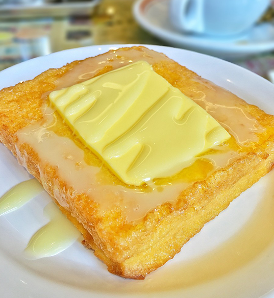

☰ M E N U
×
H O M E
A B O U T
S T U D I O
L A B
P O R T F O L I O
C O N T A C T

法 蘭 西 多 士
HONG KONG STYLE
FRENCH TOAST
3
DIRECTIONS:
Put two slices of bread together and gently press the bread to seal the sides. Remove the bread crust from the 4 sides.
‹
1
2
3
4
5
6
7
›
INGREDIENT